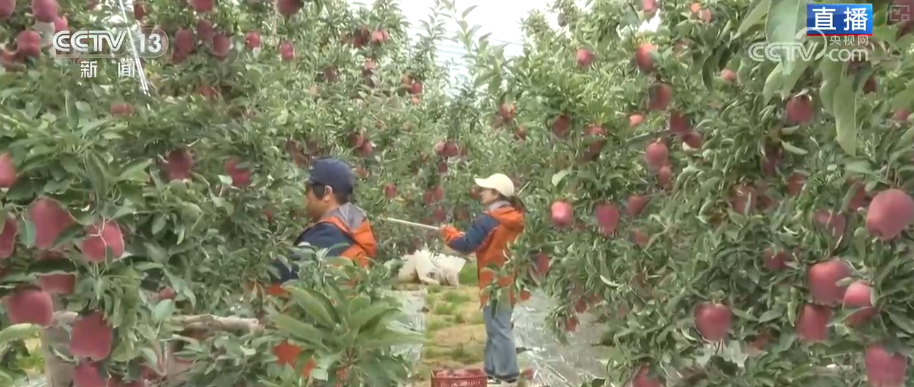

中国援建的伊洛潘戈供水厂位于萨尔瓦多圣萨尔瓦多大区东部伊洛潘戈地区。项目建设内容包括水处理厂、输水管线、变配电设施和泵站等。该项目将改善伊洛潘戈、索亚潘戈和圣马丁等7个地区约25万居民的用水条件，是中萨民生领域务实合作项目之一。

这是9月3日在萨尔瓦多圣萨尔瓦多大区东部拍摄的伊洛潘戈供水厂的絮凝沉淀处理设施及配套控制设备。新华社记者 柳文惠 摄

在这里，苹果种植不是“靠天吃饭”。果树的底下铺了一层银色的反光膜，苹果着色需要足够的光照，但是一棵果树各部分的光照条件是不一样的。果树的外围和上部可以晒到充足的阳光，但内部和下面的果实很容易出现着色不均的“青头”现象。反光膜的作用就是把直射光变成散射光，即使在阴天这种日照时间短的情况下，反光膜也能帮助果子比较均匀地增色。目前，苹果着色率能达到近100%，果子漂亮卖相好，这可是种植户钱包里实打实的收入。